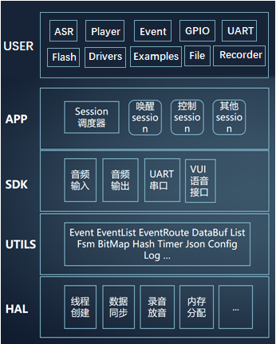
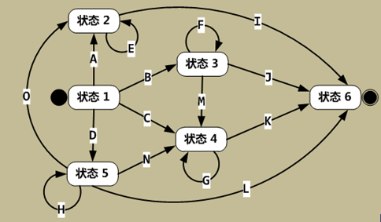

|
蜂鸟M离线方案开发指导手册
v1.0.4
|
蜂鸟M芯片源码框架采用分层设计，各个层次完成特定的功能封装，最终为二次开发提供user层功能接口，基本框架结构如下图所示：

各个层次功能描述如下：
ü HAL层：提供包括线程调度、内存管理、信号量系统级统一接口，以及Audio、Record、GPIO、Timer、I2C等外设驱动统一接口；
ü UTILS层：提供常用的工具集代码，包括如：事件队列、Ring Buffer、List、状态机、Hash运算、Json解析等，供SDK及应用层使用；
ü SDK层：提供核心功能接口，如：Audio Play、MP3 解码、语音识别等；
ü APP层：语音识别基础业务功能实现，其核心由一个事件调度和状态机构成，将语音识别业务抽象成wakeup、settings、music、watchdog等不同的session，每个session维护一个状态机，根据SDK层的识别结果事件驱动状态机运行，最终实现语音识别、播报业务逻辑；
ü USER层：提供用户二次开发接口，包括语音识别、音频播放的控制接口，以及GPIO、UART、Flash、I2C、Timer等常用的外设驱动接口，还提供了UCP通用串口协议。
源码各个文件功能如下所示：
├── build --------------------------------------> Makefile系统
├── build.sh -----------------------------------> 编译脚本
├── ci.yml -------------------------------------> 自动化平台构建脚本，对用户无用
├── include ------------------------------------> 语音识别引擎及其他自动化生成外部头文件，不可修改
├── lib ----------------------------------------> 语音识别引擎及其他底层驱动库
├── middleware ---------------------------------> RTOS系统
├── nds32-ae210p.ld ----------------------------> 链接信息脚本，不可修改
├── nds32-ae210p.sag ---------------------------> 内存段分布配置，不可修改
├── readme.txt ---------------------------------> 发布版本信息
├── src ----------------------------------------> 架构代码文件夹
│ ├── app ------------------------------------> APP层代码文件夹
│ │ ├── inc
│ │ └── src
│ │ ├── main.c -------------------------> 系统启动主程序，main函数入口
│ │ ├── sessions -----------------------> sessions代码文件夹
│ │ │ ├── uni_setting_session.c ------> setting类事件处理session
│ │ │ ├── uni_wakeup_session.c -------> wakeup类事件处理session
│ │ │ └── uni_watchdog_session.c -----> watchdog事件处理session
│ │ ├── uni_record_save.c --------------> 录音保存功能实现，蜂鸟M暂不支持
│ │ ├── uni_session.c ------------------> 创建释放session对象
│ │ ├── uni_session_manage.c -----------> 管理session注册
│ │ └── uni_user_meeting.c -------------> APP层与USER层交互接口
│ ├── hal ------------------------------------> HAL层实现代码
│ ├── sdk ------------------------------------> SDK层实现代码
│ │ ├── audio ------------------------------> Audio播放器
│ │ ├── idle_detect ------------------------> 设备空闲计时管理
│ │ ├── player -----------------------------> MP3解码器
│ │ └── vui --------------------------------> 语音识别功能
│ └── utils ----------------------------------> UTILS层实现代码
│ ├── arpt -------------------------------> ARPT自动化测试工具
│ ├── auto_string ------------------------> 变长字符串
│ ├── bitmap -----------------------------> 二值状态变量集合
│ ├── black_board ------------------------> 系统状态管理
│ ├── cJSON ------------------------------> JSON格式解析
│ ├── config -----------------------------> config.bin文件内容解析
│ ├── crc16 ------------------------------> CRC16算法
│ ├── data_buf ---------------------------> 一个不用互斥锁管理的Ring Buffer
│ ├── event ------------------------------> 创建事件对象
│ ├── event_list -------------------------> 事件队列
│ ├── event_route ------------------------> 事件分发
│ ├── float2string -----------------------> 浮点转字符串，用于无float类型打印能力的printf
│ ├── fsm --------------------------------> 状态机
│ ├── hash -------------------------------> 一个简易HASH算法
│ ├── interruptable_sleep ----------------> 非阻塞的sleep方式
│ ├── list -------------------------------> 通用链表
│ ├── log --------------------------------> 带等级控制的LOG输出接口
│ ├── string -----------------------------> 一套简易的string操作接口
│ ├── timer ------------------------------> 基于RTOS系统的Timer
│ └── uart -------------------------------> 通用的UART接口
├── startup ------------------------------------> 芯片启动代码，不可修改
├── tools --------------------------------------> 自动化构建工具
│ └── scripts --------------------------------> 自动化构建脚本
│ ├── aik_debug.json ---------------------> Debug固件对应的AIK配置文件
│ ├── aik_release.json -------------------> Release固件对应的AIK配置文件
│ ├── asrfix.dat -------------------------> 声学模型
│ ├── cmd_reply_data.json ----------------> UDP平台用户定制命令词和回复语信息
│ ├── config_debug.bin -------------------> Debug固件对应的应用配置文件
│ ├── config_release.bin -----------------> Release固件对应的应用配置文件
│ ├── custom_config.json -----------------> UDP平台用户定制系统配置信息
│ ├── default_tones ----------------------> 默认保底音频文件文件夹
│ ├── grammar.dat ------------------------> 语法模型
│ ├── grammar_jsgf.zip -------------------> 语法模型对应的构建脚本
│ ├── grammar.zip ------------------------> 语法模型文件压缩包
│ ├── input.txt --------------------------> 用户定制回复语列表
│ ├── pcm.bin ----------------------------> MP3音频flash固件，自动生成的中间文件
│ ├── pcm_map.txt ------------------------> MP3音频文件名及内容列表
│ ├── res_build_tool.py ------------------> 自动化构建脚本
│ ├── thresh.dat -------------------------> 唤醒词阈值推荐表
│ ├── tones ------------------------------> MP3音频文件夹
│ └── wav_tones --------------------------> WAV音频文件夹，自动转换到tones
├── uni_ci.yml ---------------------------------> 构建平台脚本，对用户无用
└── user ---------------------------------------> USER层实现代码
├── inc
│ ├── unione.h ---------------------------> USER层使用的底层头文件
│ ├── user_config.h ----------------------> USER可配置项，包括串口、音量等
└── src
├── examples ---------------------------> 包含个别USER模块的示例代码
├── user_asr.c -------------------------> 语音识别控制接口
├── user_event.c -----------------------> USER事件分发机制，底层调用USER注册的事件回调函数
├── user_file.c ------------------------> SD卡文件系统操作接口，蜂鸟M暂不支持
├── user_flash.c -----------------------> Flash操作接口
├── user_gpio.c ------------------------> GPIO操作接口
├── user_main.c ------------------------> 用户代码入口，参考示例实现user_main()接口以增加业务逻辑
├── user_player.c ----------------------> 音频播放控制接口
├── user_power.c -----------------------> 功耗操作接口，蜂鸟M暂不支持
├── user_pwm.c -------------------------> PWM操作接口
├── user_record.c ----------------------> 录音控制接口，蜂鸟M暂不支持
├── user_timer.c -----------------------> Timer操作接口
├── user_uart.c ------------------------> UART操作接口
└── user_uni_ucp.c ---------------------> 通用串口协议操作接口
为保证代码业务逻辑的额可扩展性和健壮性，在APP层设计中使用了事件分发和状态机的机制，每个session都维护一个独立的状态机，底层事件分发后，根据各个session状态机的状态激发对应session的事件处理，如此一直运行下去。
代码中使用的是有限状态机,也称为FSM(Finite State Machine)，其在任意时刻都处于有限状态集合中的某一状态。当其获得一个输入事件时，将从当前状态转换到另一个状态，或者仍然保持在当前状态。任何一个FSM都可以用状态转换图来描述：

在二次开发时，并不需要关心APP层的实现，USER层已经将各个功能模块控制接口封装，调用USER层接口会自动触发状态机运转，从而实现定制功能。